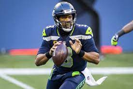

1. Patrick Mahomes ll
Link : H/L video of Mahomes ll
| Year | Team | Games | Passing | Rushing | ||||||||||||
|---|---|---|---|---|---|---|---|---|---|---|---|---|---|---|---|---|
| GP | GS | Record | Comp | Att | Pct | Yds | Avg | TD | Int | Rate | Att | Yds | Avg | TD | ||
| 2017 | KC | 1 | 1 | 1−0 | 22 | 35 | 62.9 | 284 | 8.1 | 0 | 1 | 76.4 | 7 | 10 | 1.4 | 0 |
| 2018 | KC | 16 | 16 | 12−4 | 383 | 580 | 66.0 | 5,097 | 8.8 | 50 | 12 | 113.8 | 60 | 272 | 4.5 | 2 |
| 2019 | KC | 14 | 14 | 11−3 | 319 | 484 | 65.9 | 4,031 | 8.3 | 26 | 5 | 105.3 | 43 | 218 | 5.5 | 2 |
| 2020 | KC | 15 | 15 | 14−1 | 390 | 588 | 66.3 | 4,740 | 8.1 | 38 | 6 | 108.2 | 62 | 308 | 5.0 | 2 |
| Career | 46 | 46 | 38−8 | 1,114 | 1,687 | 66.0 | 14,152 | 8.4 | 114 | 24 | 108.7 | 172 | 808 | 4.7 | 6 | |
2. Josh Allen
Link : H/L video of Josh Allen
| General | Passing | Rushing | Receiving | Sacks | Fumbles | ||||||||||||||||||||||
| Year | Team | GP | GS | Record | Comp | Att | Pct | Yds | Avg | Lng | TD | Int | Rate | Att | Yds | Avg | Lng | TD | Rec | Yds | Avg | Lng | TD | Sck | SckY | Fum | Lost |
| 2018 | BUF | 12 | 11 | 5–6 | 169 | 320 | 52.8 | 2,074 | 6.5 | 75T | 10 | 12 | 67.9 | 89 | 631 | 7.1 | 45 | 8 | 0 | 0 | 0.0 | 0 | 0 | 28 | 213 | 8 | 2 |
|---|---|---|---|---|---|---|---|---|---|---|---|---|---|---|---|---|---|---|---|---|---|---|---|---|---|---|---|
| 2019 | BUF | 16 | 16 | 10–6 | 271 | 461 | 58.8 | 3,089 | 6.7 | 53T | 20 | 9 | 85.3 | 109 | 510 | 4.7 | 36 | 9 | 0 | 0 | 0.0 | 0 | 0 | 38 | 237 | 14 | 4 |
| 2020 | BUF | 16 | 16 | 13–3 | 396 | 572 | 69.1 | 4,544 | 7.9 | 55 | 37 | 10 | 107.2 | 102 | 421 | 4.1 | 24T | 8 | 1 | 12 | 12.0 | 12T | 1 | 26 | 159 | 8 | 6 |
| Total | 44 | 43 | 28–15 | 836 | 1,353 | 61.8 | 9,707 | 7.2 | 75T | 67 | 31 | 89.8 | 300 | 1,562 | 5.2 | 45 | 25 | 1 | 12 | 12.0 | 12T | 1 | 92 | 609 | 30 | 12 | |
3. Aaron Rodgers
Link : H/L video of Aaron Rodgers
| Year | Team | Games | Passing | Rushing | Sacks | Fumbles | ||||||||||||||||
|---|---|---|---|---|---|---|---|---|---|---|---|---|---|---|---|---|---|---|---|---|---|---|
| GP | GS | Record | Cmp | Att | Pct | Yds | Avg | TD | Int | Rtg | TD% | Int% | Att | Yds | Avg | TD | Sck | Yds | Fum | Lost | ||
| 2017 | GB | 7 | 7 | 4−3 | 154 | 238 | 64.7 | 1,675 | 7.0 | 16 | 6 | 97.2 | 6.7 | 2.5 | 24 | 126 | 5.2 | 0 | 22 | 168 | 1 | 1 |
| 2018 | GB | 16 | 16 | 6−9−1 | 372 | 597 | 62.3 | 4,442 | 7.4 | 25 | 2 | 97.6 | 4.2 | 0.3 | 43 | 269 | 6.3 | 2 | 49 | 353 | 6 | 3 |
| 2019 | GB | 16 | 16 | 13−3 | 353 | 569 | 62.0 | 4,002 | 7.0 | 26 | 4 | 95.4 | 4.5 | 0.7 | 46 | 183 | 4.0 | 1 | 36 | 284 | 4 | 4 |
| 2020 | GB | 16 | 16 | 13−3 | 372 | 526 | 70.7 | 4,299 | 8.2 | 48 | 5 | 121.5 | 9.1 | 1.0 | 38 | 149 | 3.9 | 3 | 20 | 182 | 4 | 2 |
| Career | 197 | 190 | 126−63−1 | 4,285 | 6,587 | 65.1 | 51,245 | 7.8 | 412 | 89 | 103.9 | 6.2 | 1.4 | 652 | 3,271 | 5.0 | 31 | 468 | 3,150 | 81 | 35 | |
4. Kyler Murray
Link : H/L video of Kyler Murray
| Year | Team | Games | Passing | Rushing | Sacks | Fumbles | |||||||||||||
|---|---|---|---|---|---|---|---|---|---|---|---|---|---|---|---|---|---|---|---|
| GP | GS | Comp | Att | Pct | Yds | Avg | TD | Int | Rtg | Att | Yds | Avg | TD | Sck | SckY | Fum | Lost | ||
| 2019 | ARI | 16 | 16 | 349 | 542 | 64.4 | 3,722 | 6.9 | 20 | 12 | 87.4 | 93 | 544 | 5.9 | 4 | 48 | 309 | 5 | 2 |
| 2020 | ARI | 16 | 16 | 375 | 558 | 67.2 | 3,971 | 7.1 | 26 | 12 | 94.3 | 133 | 819 | 6.2 | 11 | 27 | 176 | 9 | 4 |
| Career | 32 | 32 | 724 | 1,100 | 65.8 | 7,693 | 7.0 | 46 | 24 | 90.9 | 226 | 1,363 | 6.0 | 15 | 75 | 485 | 14 | 6 | |

Link : H/L video of Russel Wilson
5. Russel Wilson
Link : H/L video of Russel Wilson
| NFL career statistics | ||||||||||||||||||||
|---|---|---|---|---|---|---|---|---|---|---|---|---|---|---|---|---|---|---|---|---|
| Year | Team | Games | Passing | Rushing | Sacks | Fumbles | ||||||||||||||
| GP | GS | Record | Comp | Att | Pct | Yards | Avg | TD | Int | Rate | Att | Yds | Avg | TD | Sck | SckY | Fum | Lost | ||
| 2017 | SEA | 16 | 16 | 9−7 | 339 | 553 | 61.3 | 3,983 | 7.2 | 34 | 11 | 95.4 | 95 | 586 | 6.2 | 3 | 43 | 322 | 14 | 3 |
| 2018 | SEA | 16 | 16 | 10−6 | 280 | 427 | 65.6 | 3,448 | 8.1 | 35 | 7 | 110.9 | 67 | 376 | 5.6 | 0 | 51 | 355 | 10 | 2 |
| 2019 | SEA | 16 | 16 | 11−5 | 341 | 516 | 66.1 | 4,110 | 8.0 | 31 | 5 | 106.3 | 75 | 342 | 4.6 | 3 | 48 | 319 | 8 | 2 |
| 2020 | SEA | 16 | 16 | 12−4 | 384 | 558 | 68.8 | 4,212 | 7.5 | 40 | 13 | 105.1 | 83 | 513 | 6.2 | 2 | 47 | 301 | 7 | 4 |
| Total | 144 | 144 | 98−45−1 | 2,820 | 4,335 | 65.1 | 33,946 | 7.8 | 267 | 81 | 101.7 | 803 | 4,506 | 5.6 | 21 | 394 | 2,572 | 81 | 24 | |